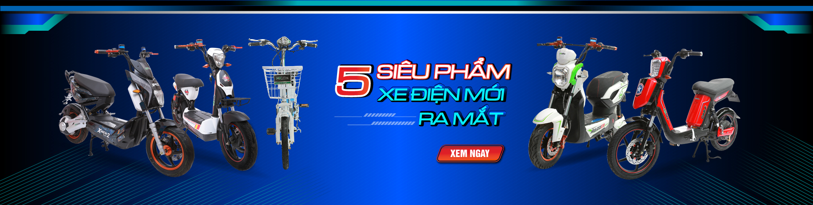

Nhiều người dùng vẫn mắc sai lầm nghiêm trọng khi sạc pin xe điện dẫn đến tình trạng chai pin, phồng bình, xe nhanh hết điện. Đọc ngay bí kíp từ các chuyên gia kỹ thuật của E-Bike Shop để bảo vệ "trái tim" của chiếc xe điện bạn nhé!

1. Thời điểm "Vàng" để cắm sạc
Lỗi phổ biến nhất là để xe cạn sạch điện (tắt nguồn hoàn toàn) mới đem đi sạc. Điều này cực kỳ gây hại cho các cell pin/ắc quy bên trong. Thời điểm lý tưởng nhất để cắm sạc là khi đồng hồ báo pin còn khoảng 20% - 30% (còn 1-2 vạch pin).
Đồng thời, sau khi vừa đi đường dài về, xe còn đang nóng, bạn tuyệt đối KHÔNG ĐƯỢC cắm sạc ngay. Hãy để xe nghỉ ngơi khoảng 30-45 phút cho bình ắc quy tản nhiệt, nguội hẳn rồi mới cắm sạc.
2. Sạc bao lâu thì rút?
Đa số các bộ sạc chính hãng hiện nay (như sạc của Osakar, Yadea, Pega) đều có tính năng tự ngắt khi đầy. Khi sạc, đèn trên bộ sạc sẽ báo màu Đỏ, khi đầy đèn sẽ chuyển sang màu Xanh. Bạn nên rút sạc sau khi đèn báo xanh khoảng 30 phút - 1 tiếng. Không nên cắm sạc để qua đêm liên tục ngày này qua tháng nọ, vì dù sạc có tự ngắt nhưng nếu để dòng điện rò rỉ lâu dài vẫn làm giảm tuổi thọ bình.
3. Trình tự cắm sạc an toàn
Rất nhiều người cắm điện vào ổ cắm tường trước rồi mới cắm vào xe, điều này dễ gây hiện tượng phóng tia lửa điện (xoẹt điện) làm hỏng rắc cắm. Trình tự đúng và an toàn là:
- Bước 1: Cắm rắc sạc vào cổng sạc trên xe điện.
- Bước 2: Cắm phích cắm của bộ sạc vào ổ điện 220V trên tường.
- Khi rút sạc: Làm ngược lại (Rút khỏi ổ tường trước, rút khỏi xe sau).
4. Bảo quản pin khi không đi xe thời gian dài
Nếu nghỉ hè, về quê hoặc đi công tác không dùng xe trong vài tháng, đừng để xe ở tình trạng cạn pin hoặc sạc đầy 100%. Hãy sạc pin lên mức khoảng 50% - 60%, sau đó ngắt aptomat (nếu có) và để xe ở nơi khô ráo, thoáng mát. Cứ khoảng 1 tháng, bạn nên cắm sạc bồi thêm 1 lần để giữ cho các cell pin không bị "chết".